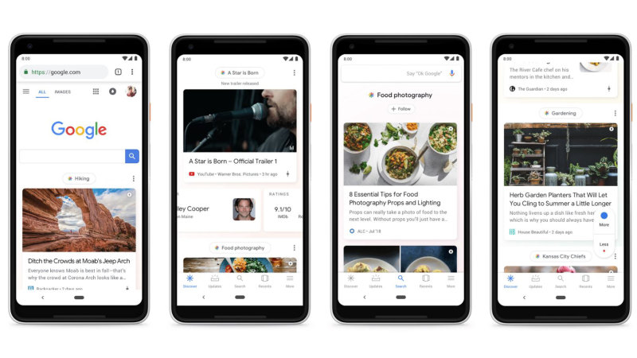

You’ve probably heard many of your favorite YouTube channels and creators talk about YouTube’s recommendation algorithms at one point or another. Maybe someone worked for days on a specific video only to see YouTube not display it prominently on the Home page, and took to Twitter to complain, or a creator mentioned an old video of theirs suddenly spiked in views for no apparent reason.
Most people on YouTube watch videos through the Home page, which is entirely based on what the site’s algorithms and machine learning believe you want to watch. The high usage isn’t just because the Home page is the first thing you see when you open the site or mobile apps — it’s because, given enough historical data, the Home page is usually pretty good at guessing what you want to watch.
While the Home page and other video recommendations are generally good for viewers, they are a complete black box for content creators. Sometimes it can push a creator’s videos to new viewers, generating additional views that can count in the thousands of millions, other times it might not even prominently display a given video to a creator’s existing audience (outside of the non-algorithmic Subscriptions page, anyway). There are some common ideas for how to make algorithm-friendly videos, such as increasing the video length and avoiding curse words in titles, but there’s no way to actually test any single factor (a title, a thumbnail, etc) because YouTube’s algorithms take every single possible factor about a video and its creator into consideration. The best anyone can do is pay attention to trends over time and attempt to extrapolate commonalities.
Finally, algorithmic recommendations means one of the best options for reaching a wide audience is to follow trends. If there’s a topic that millions of people are interested in and searching for, YouTube will push content based on that topic to viewers. Sometimes, but not always, this can lead to creators attempting to appease the algorithm rather than produce something their core audience enjoys.
There’s a ‘Home’ page for news websites too, called Discover (also sometimes called ‘Google Feed’ or ‘Google Discover Feed’). This started out as Google Now many years ago, a home screen page on some Android phones that showed recommended articles, weather information, package shipping updates, and other helpful information. Eventually, everything except the articles went away, because usually gets advertising revenue from the articles.

Discover can now be found in a few different places, such as the New Tab Page on the mobile Chrome browser, and the Google app on iOS and Android. It’s a never-ending list of news articles and videos Google thinks you might want to view. Sound familiar?
Google is rather open about Discover being unpredictable from a publisher’s standpoint, saying in a support page, “given the serendipitous nature of Discover, traffic from Discover is less predictable or dependable when compared to Search, and is considered supplemental to your Search traffic.” Discover also gives websites fewer options for customizing how they appear, when compared to search engine listings. For example, while you can have the title of an article be something different for a search engine (search engines just look at the HTML page title), you can’t really do that for Discover.
The unpredictable nature of Discover hasn’t turned off publishers, though. The feature’s prime location in the home screen of millions of Android devices (as well as the millions using the mobile Chrome browser) is a massive potential market. In the short time I’ve been in the tech publishing world, I’ve seen Discover become more and more important for publishers.
Just like YouTube’s home page, the growing effect of Discover isn’t always positive. Clickbait headlines are a fairly common sight on Discover, just as videos with clickbait thumbnails are common on YouTube. It’s the complete opposite of traditional search engine optimization (SEO) — while SEO crams in as many keywords as possible (e.g. “Samsung adds Bixby voice assistant to Galaxy S21″), successful content on Discover often has just enough information for someone to click (e.g. “Samsung just added this super cool feature to its phones”).
Discover also encourages publishers and creators to target trends and topics outside of what their typical audience might be interested in. If you have a website about trains that Google sees as high-quality, and you post an article about a new electric car, Discover might push that article to anyone who has shown an interest in electric cars. If you’ve noticed some of your favorite news sites started to expand beyond their original scope of coverage sometime in the past few years, Discover is probably one of the reasons why.
I stopped using Discover years ago, but I can’t quite escape its grasp in my line of work as a tech journalist. I’ve seen the headlines of many articles altered from their original versions to make them more Discover-friendly, even though no one outside of Google really knows how Discover works. Just like with YouTube (and to a lesser extent, search engine optimization), Discover’s algorithms are impossible to predict beyond the basic premise of “make the person want to click.”
Discover also has a tendency to promote content that is unhelpful at best and outright wrong at worst. Perhaps the most infamous example of this is Forbes, and more specifically, writer Gordon Kelly. For a while, every single new release of iOS was followed by an article with the headline “Apple iOS [version] has a nasty surprise,” even if said update didn’t actually have any problems. Kelly’s nasty surprises continued until Forbes (supposedly) told its writers to cut back on the clickbait. Google isn’t totally to blame here — Forbes is one of many outlets that pays writers based on page views (as of 2018), with actively encourages clickbait — but Kelly’s nasty surprises were commonplace on the Discover feed of myself and others in recent history.

Most importantly, Discover is drawing people away from checking websites directly (or following their direct feeds), which is a problem. It places even more control of the web and publishing industry in the hands of Google. You can make a lot of money if your content appears in Discover, but all it takes is one server-side algorithm update for that to go away.
If you use Google Discover, or other algorithmic feeds like it, I would encourage you to seek out alternatives. RSS readers like Feedly and Inoreader are excellent ways to keep tabs on your favorite news sites, and many major sites now have email newsletters as well, which can be a hybrid of Discover’s curated nature and the direct communication of RSS readers.
Don’t let your news just come from Google, or the entire internet will just become YouTube.